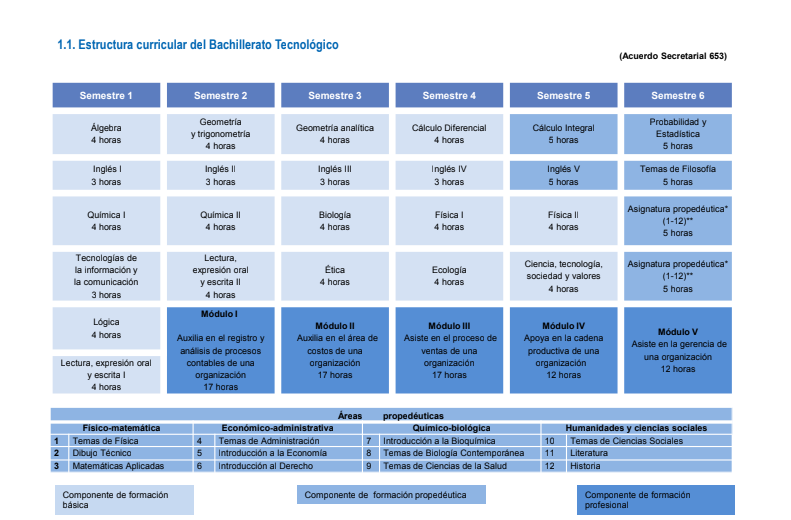
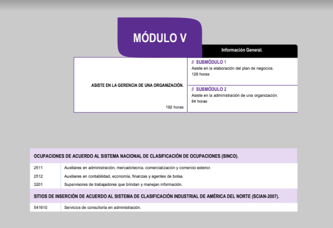

Programa
Estructura curricular.

A continuación se mostrarán las competencias profecionales de los modulos.
1.2 Justificación de la carrera
La carrera de Técnico en Procesos de Gestión Administrativa ofrece las competencias profesionales que permiten al estudiante realizar
actividades dirigidas a ejecutar funciones administrativas dentro de una organización, tales como auxiliar en el registro y análisis de los
procesos contables, auxiliar en el área de costos, asistir en el proceso de ventas, apoyar en la cadena productiva y asistir en la gerencia,
esto es, incidir en el ejercicio práctico de las empresas, reafirmando y consolidando objetivamente sus conocimientos, habilidades,
actitudes y creatividad dentro de las mismas.
Todas estas competencias posibilitan al egresado su incorporación al mundo laboral o desarrollar procesos productivos independientes,
de acuerdo con sus intereses profesionales y necesidades de su entorno social, el cual presenta cambios que afectan a las empresas
mexicanas y se hace necesario identificar los retos que éstos representan y responder a dichos cambios de tal manera que se
transformen en oportunidades empresariales para el crecimiento y desarrollo.
El Técnico en Procesos de Gestión Administrativa adquiere los conocimientos, habilidades y actitudes necesarias para desarrollarse en el
campo laboral como auxiliar en los procesos administrativos o de su propio negocio.
Así mismo, contribuye a desarrollar competencias genéricas que le permita comprender el mundo e influir en él, le capacita para aprender
de forma autónoma a lo largo de la vida, desarrollar relaciones armónicas, participar en los ámbitos social, profesional y político. Lo
anterior con apego al cuidado del medio ambiente y una amplia responsabilidad social, de tal manera que se facilite la vinculación con el
sector productivo.
Con las competencias de empleabilidad y productividad se promueve en el estudiante tener claras las metas y objetivos de su área y de
su puesto, detectar y reportar inconsistencias o errores en el producto, en el proceso o en los insumos, observar permanentemente y
reporta los cambios presentes en los procesos, infraestructura e insumos, diseñar y utilizar indicadores para medir y comprobar los
resultados obtenidos, mejorar la relación entre objetivos logrados y los recursos invertidos en términos de calidad, costo y oportunidad,
mantener informados a sus colaboradores de los objetivos, responsabilidades y avances de las tareas asignadas, promover la mejora
como un activo decisivo para la competitividad de la organización o empresa, utilizar la comunicación efectiva para identificar las
necesidades del cliente, realizar seguimiento de dichas necesidades para darle una respuesta, actuar por convicción personal más que
por presión externa y compartir su experiencia, conocimiento y recursos para el desempeño armónico del equipo.
9
Es por ello que la carrera de Técnico en Procesos de Gestión Administrativa permite al técnico incorporarse al ámbito laboral en diversos
sitios de inserción como:
• Servicios de contabilidad y auditoria.
• Servicios de consultoría en administración.
• Técnicos en ciencias administrativas.
• Servicios de almacenamiento.
• Establecimientos de comercio al por menor.
• Servicios de apoyo en ventas a negocios.
• Servicio de empacado y etiquetado.
Para lograr las competencias, el estudiante debe contar con una formación profesional que se inicia en el segundo semestre y se
concluye en el sexto, desarrollando en este lapso de tiempo las competencias profesionales que marca el programa de estudios.
Los primeros tres módulos de la carrera técnica tienen una duración de 272 horas cada uno, y los dos últimos de 192, un total de 1200
horas de formación profesional.
Cabe destacar que los módulos de formación profesional tienen carácter transdisciplinario, por cuanto corresponden con objetos y
procesos de transformación que implica la integración de saberes de distintas disciplinas.
Modulos que integran la carrera


